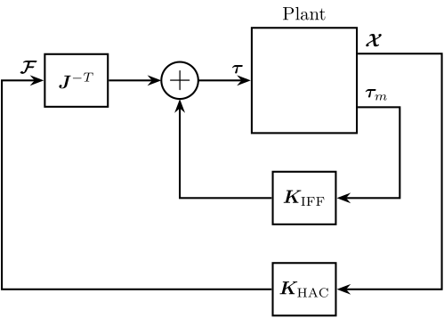
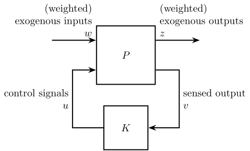
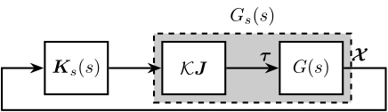
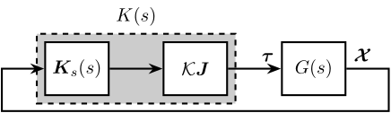

Stewart Platform - Vibration Isolation
Table of Contents
- 1. HAC-LAC (Cascade) Control - Integral Control
- 2. MIMO Analysis
- 3. Diagonal Control based on the damped plant
- 4. Time Domain Simulation
- 5. Functions
1 HAC-LAC (Cascade) Control - Integral Control
1.1 Introduction
In this section, we wish to study the use of the High Authority Control - Low Authority Control (HAC-LAC) architecture on the Stewart platform.
The control architectures are shown in Figures 1 and 2.
First, the LAC loop is closed (the LAC control is described here), and then the HAC controller is designed and the outer loop is closed.

Figure 1: HAC-LAC architecture with IFF
Figure 2: HAC-LAC architecture with DVF
1.2 Initialization
We first initialize the Stewart platform.
stewart = initializeStewartPlatform(); stewart = initializeFramesPositions(stewart, 'H', 90e-3, 'MO_B', 45e-3); stewart = generateGeneralConfiguration(stewart); stewart = computeJointsPose(stewart); stewart = initializeStrutDynamics(stewart); stewart = initializeJointDynamics(stewart, 'type_F', 'universal', 'type_M', 'spherical'); stewart = initializeCylindricalPlatforms(stewart); stewart = initializeCylindricalStruts(stewart); stewart = computeJacobian(stewart); stewart = initializeStewartPose(stewart); stewart = initializeInertialSensor(stewart, 'type', 'none');
The rotation point of the ground is located at the origin of frame \(\{A\}\).
ground = initializeGround('type', 'rigid', 'rot_point', stewart.platform_F.FO_A); payload = initializePayload('type', 'none');
1.3 Identification
We identify the transfer function from the actuator forces \(\bm{\tau}\) to the absolute displacement of the mobile platform \(\bm{\mathcal{X}}\) in three different cases:
- Open Loop plant
- Already damped plant using Integral Force Feedback
- Already damped plant using Direct velocity feedback
1.3.1 HAC - Without LAC
controller = initializeController('type', 'open-loop');
%% Name of the Simulink File mdl = 'stewart_platform_model'; %% Input/Output definition clear io; io_i = 1; io(io_i) = linio([mdl, '/Controller'], 1, 'input'); io_i = io_i + 1; % Actuator Force Inputs [N] io(io_i) = linio([mdl, '/Absolute Motion Sensor'], 1, 'openoutput'); io_i = io_i + 1; % Absolute Sensor [m, rad] %% Run the linearization G_ol = linearize(mdl, io); G_ol.InputName = {'F1', 'F2', 'F3', 'F4', 'F5', 'F6'}; G_ol.OutputName = {'Dx', 'Dy', 'Dz', 'Rx', 'Ry', 'Rz'};
1.3.2 HAC - IFF
controller = initializeController('type', 'iff'); K_iff = -(1e4/s)*eye(6);
%% Name of the Simulink File mdl = 'stewart_platform_model'; %% Input/Output definition clear io; io_i = 1; io(io_i) = linio([mdl, '/Controller'], 1, 'input'); io_i = io_i + 1; % Actuator Force Inputs [N] io(io_i) = linio([mdl, '/Absolute Motion Sensor'], 1, 'openoutput'); io_i = io_i + 1; % Absolute Sensor [m, rad] %% Run the linearization G_iff = linearize(mdl, io); G_iff.InputName = {'F1', 'F2', 'F3', 'F4', 'F5', 'F6'}; G_iff.OutputName = {'Dx', 'Dy', 'Dz', 'Rx', 'Ry', 'Rz'};
1.3.3 HAC - DVF
controller = initializeController('type', 'dvf'); K_dvf = -1e4*s/(1+s/2/pi/5000)*eye(6);
%% Name of the Simulink File mdl = 'stewart_platform_model'; %% Input/Output definition clear io; io_i = 1; io(io_i) = linio([mdl, '/Controller'], 1, 'input'); io_i = io_i + 1; % Actuator Force Inputs [N] io(io_i) = linio([mdl, '/Absolute Motion Sensor'], 1, 'openoutput'); io_i = io_i + 1; % Absolute Sensor [m, rad] %% Run the linearization G_dvf = linearize(mdl, io); G_dvf.InputName = {'F1', 'F2', 'F3', 'F4', 'F5', 'F6'}; G_dvf.OutputName = {'Dx', 'Dy', 'Dz', 'Rx', 'Ry', 'Rz'};
1.4 Control Architecture
We use the Jacobian to express the actuator forces in the cartesian frame, and thus we obtain the transfer functions from \(\bm{\mathcal{F}}\) to \(\bm{\mathcal{X}}\).
Gc_ol = minreal(G_ol)/stewart.kinematics.J'; Gc_ol.InputName = {'Fx', 'Fy', 'Fz', 'Mx', 'My', 'Mz'}; Gc_iff = minreal(G_iff)/stewart.kinematics.J'; Gc_iff.InputName = {'Fx', 'Fy', 'Fz', 'Mx', 'My', 'Mz'}; Gc_dvf = minreal(G_dvf)/stewart.kinematics.J'; Gc_dvf.InputName = {'Fx', 'Fy', 'Fz', 'Mx', 'My', 'Mz'};
We then design a controller based on the transfer functions from \(\bm{\mathcal{F}}\) to \(\bm{\mathcal{X}}\), finally, we will pre-multiply the controller by \(\bm{J}^{-T}\).
1.5 6x6 Plant Comparison
{kind=link}
1.6 HAC - DVF
1.6.1 Plant
{kind=link}
1.6.2 Controller Design
We design a diagonal controller with equal bandwidth for the 6 terms. The controller is a pure integrator with a small lead near the crossover.
wc = 2*pi*300; % Wanted Bandwidth [rad/s] h = 1.2; H_lead = 1/h*(1 + s/(wc/h))/(1 + s/(wc*h)); Kd_dvf = diag(1./abs(diag(freqresp(1/s*Gc_dvf, wc)))) .* H_lead .* 1/s;
{kind=link}
Finally, we pre-multiply the diagonal controller by \(\bm{J}^{-T}\) prior implementation.
K_hac_dvf = inv(stewart.kinematics.J')*Kd_dvf;
1.6.3 Obtained Performance
We identify the transmissibility and compliance of the system.
controller = initializeController('type', 'open-loop'); [T_ol, T_norm_ol, freqs] = computeTransmissibility(); [C_ol, C_norm_ol, ~] = computeCompliance();
controller = initializeController('type', 'dvf'); [T_dvf, T_norm_dvf, ~] = computeTransmissibility(); [C_dvf, C_norm_dvf, ~] = computeCompliance();
controller = initializeController('type', 'hac-dvf'); [T_hac_dvf, T_norm_hac_dvf, ~] = computeTransmissibility(); [C_hac_dvf, C_norm_hac_dvf, ~] = computeCompliance();
{kind=link}
1.7 HAC - IFF
1.7.1 Plant
{kind=link}
1.7.2 Controller Design
We design a diagonal controller with equal bandwidth for the 6 terms. The controller is a pure integrator with a small lead near the crossover.
wc = 2*pi*300; % Wanted Bandwidth [rad/s] h = 1.2; H_lead = 1/h*(1 + s/(wc/h))/(1 + s/(wc*h)); Kd_iff = diag(1./abs(diag(freqresp(1/s*Gc_iff, wc)))) .* H_lead .* 1/s;
{kind=link}
Finally, we pre-multiply the diagonal controller by \(\bm{J}^{-T}\) prior implementation.
K_hac_iff = inv(stewart.kinematics.J')*Kd_iff;
1.7.3 Obtained Performance
We identify the transmissibility and compliance of the system.
controller = initializeController('type', 'open-loop'); [T_ol, T_norm_ol, freqs] = computeTransmissibility(); [C_ol, C_norm_ol, ~] = computeCompliance();
controller = initializeController('type', 'iff'); [T_iff, T_norm_iff, ~] = computeTransmissibility(); [C_iff, C_norm_iff, ~] = computeCompliance();
controller = initializeController('type', 'hac-iff'); [T_hac_iff, T_norm_hac_iff, ~] = computeTransmissibility(); [C_hac_iff, C_norm_hac_iff, ~] = computeCompliance();
{kind=link}
{kind=link}
{kind=link}
{kind=link}
2 MIMO Analysis
Let’s define the system as shown in figure 13.

Figure 13: General Control Architecture
| Symbol | Meaning | |
|---|---|---|
| Exogenous Inputs | \(\bm{\mathcal{X}}_w\) | Ground motion |
| \(\bm{\mathcal{F}}_d\) | External Forces applied to the Payload | |
| \(\bm{r}\) | Reference signal for tracking | |
| Exogenous Outputs | \(\bm{\mathcal{X}}\) | Absolute Motion of the Payload |
| \(\bm{\tau}\) | Actuator Rate | |
| Sensed Outputs | \(\bm{\tau}_m\) | Force Sensors in each leg |
| \(\delta \bm{\mathcal{L}}_m\) | Measured displacement of each leg | |
| \(\bm{\mathcal{X}}\) | Absolute Motion of the Payload | |
| Control Signals | \(\bm{\tau}\) | Actuator Inputs |
2.1 Initialization
We first initialize the Stewart platform.
stewart = initializeStewartPlatform(); stewart = initializeFramesPositions(stewart, 'H', 90e-3, 'MO_B', 45e-3); stewart = generateGeneralConfiguration(stewart); stewart = computeJointsPose(stewart); stewart = initializeStrutDynamics(stewart); stewart = initializeJointDynamics(stewart, 'type_F', 'universal', 'type_M', 'spherical'); stewart = initializeCylindricalPlatforms(stewart); stewart = initializeCylindricalStruts(stewart); stewart = computeJacobian(stewart); stewart = initializeStewartPose(stewart); stewart = initializeInertialSensor(stewart, 'type', 'none');
The rotation point of the ground is located at the origin of frame \(\{A\}\).
ground = initializeGround('type', 'rigid', 'rot_point', stewart.platform_F.FO_A); payload = initializePayload('type', 'none');
2.2 Identification
2.2.1 HAC - Without LAC
controller = initializeController('type', 'open-loop');
%% Name of the Simulink File mdl = 'stewart_platform_model'; %% Input/Output definition clear io; io_i = 1; io(io_i) = linio([mdl, '/Controller'], 1, 'input'); io_i = io_i + 1; % Actuator Force Inputs [N] io(io_i) = linio([mdl, '/Absolute Motion Sensor'], 1, 'openoutput'); io_i = io_i + 1; % Absolute Sensor [m, rad] %% Run the linearization G_ol = linearize(mdl, io); G_ol.InputName = {'F1', 'F2', 'F3', 'F4', 'F5', 'F6'}; G_ol.OutputName = {'Dx', 'Dy', 'Dz', 'Rx', 'Ry', 'Rz'};
2.2.2 HAC - DVF
controller = initializeController('type', 'dvf'); K_dvf = -1e4*s/(1+s/2/pi/5000)*eye(6);
%% Name of the Simulink File mdl = 'stewart_platform_model'; %% Input/Output definition clear io; io_i = 1; io(io_i) = linio([mdl, '/Controller'], 1, 'input'); io_i = io_i + 1; % Actuator Force Inputs [N] io(io_i) = linio([mdl, '/Absolute Motion Sensor'], 1, 'openoutput'); io_i = io_i + 1; % Absolute Sensor [m, rad] %% Run the linearization G_dvf = linearize(mdl, io); G_dvf.InputName = {'F1', 'F2', 'F3', 'F4', 'F5', 'F6'}; G_dvf.OutputName = {'Dx', 'Dy', 'Dz', 'Rx', 'Ry', 'Rz'};
2.2.3 Cartesian Frame
Gc_ol = minreal(G_ol)/stewart.kinematics.J'; Gc_ol.InputName = {'Fx', 'Fy', 'Fz', 'Mx', 'My', 'Mz'}; Gc_dvf = minreal(G_dvf)/stewart.kinematics.J'; Gc_dvf.InputName = {'Fx', 'Fy', 'Fz', 'Mx', 'My', 'Mz'};
2.3 Singular Value Decomposition
freqs = logspace(1, 4, 1000); U_ol = zeros(6,6,length(freqs)); S_ol = zeros(6,length(freqs)); V_ol = zeros(6,6,length(freqs)); U_dvf = zeros(6,6,length(freqs)); S_dvf = zeros(6,length(freqs)); V_dvf = zeros(6,6,length(freqs)); for i = 1:length(freqs) [U,S,V] = svd(freqresp(Gc_ol, freqs(i), 'Hz')); U_ol(:,:,i) = U; S_ol(:,i) = diag(S); V_ol(:,:,i) = V; [U,S,V] = svd(freqresp(Gc_dvf, freqs(i), 'Hz')); U_dvf(:,:,i) = U; S_dvf(:,i) = diag(S); V_dvf(:,:,i) = V; end
3 Diagonal Control based on the damped plant
From skogestad07_multiv_feedb_contr, a simple approach to multivariable control is the following two-step procedure:
- Design a pre-compensator \(W_1\), which counteracts the interactions in the plant and results in a new shaped plant \(G_S(s) = G(s) W_1(s)\) which is more diagonal and easier to control than the original plant \(G(s)\).
- Design a diagonal controller \(K_S(s)\) for the shaped plant using methods similar to those for SISO systems.
The overall controller is then: \[ K(s) = W_1(s)K_s(s) \]
There are mainly three different cases:
- Dynamic decoupling: \(G_S(s)\) is diagonal at all frequencies. For that we can choose \(W_1(s) = G^{-1}(s)\) and this is an inverse-based controller.
- Steady-state decoupling: \(G_S(0)\) is diagonal. This can be obtained by selecting \(W_1(s) = G^{-1}(0)\).
- Approximate decoupling at frequency \(\w_0\): \(G_S(j\w_0)\) is as diagonal as possible. Decoupling the system at \(\w_0\) is a good choice because the effect on performance of reducing interaction is normally greatest at this frequency.
3.1 Initialization
We first initialize the Stewart platform.
stewart = initializeStewartPlatform(); stewart = initializeFramesPositions(stewart, 'H', 90e-3, 'MO_B', 45e-3); stewart = generateGeneralConfiguration(stewart); stewart = computeJointsPose(stewart); stewart = initializeStrutDynamics(stewart); stewart = initializeJointDynamics(stewart, 'type_F', 'universal', 'type_M', 'spherical'); stewart = initializeCylindricalPlatforms(stewart); stewart = initializeCylindricalStruts(stewart); stewart = computeJacobian(stewart); stewart = initializeStewartPose(stewart); stewart = initializeInertialSensor(stewart, 'type', 'none');
The rotation point of the ground is located at the origin of frame \(\{A\}\).
ground = initializeGround('type', 'rigid', 'rot_point', stewart.platform_F.FO_A); payload = initializePayload('type', 'none');
3.2 Identification
controller = initializeController('type', 'dvf'); K_dvf = -1e4*s/(1+s/2/pi/5000)*eye(6);
%% Name of the Simulink File mdl = 'stewart_platform_model'; %% Input/Output definition clear io; io_i = 1; io(io_i) = linio([mdl, '/Controller'], 1, 'input'); io_i = io_i + 1; % Actuator Force Inputs [N] io(io_i) = linio([mdl, '/Absolute Motion Sensor'], 1, 'openoutput'); io_i = io_i + 1; % Absolute Sensor [m, rad] %% Run the linearization G_dvf = linearize(mdl, io); G_dvf.InputName = {'F1', 'F2', 'F3', 'F4', 'F5', 'F6'}; G_dvf.OutputName = {'Dx', 'Dy', 'Dz', 'Rx', 'Ry', 'Rz'};
3.3 Steady State Decoupling
3.3.1 Pre-Compensator Design
We choose \(W_1 = G^{-1}(0)\).
W1 = inv(freqresp(G_dvf, 0));
The (static) decoupled plant is \(G_s(s) = G(s) W_1\).
Gs = G_dvf*W1;
In the case of the Stewart platform, the pre-compensator for static decoupling is equal to \(\mathcal{K} \bm{J}\):
\begin{align*} W_1 &= \left( \frac{\bm{\mathcal{X}}}{\bm{\tau}}(s=0) \right)^{-1}\\ &= \left( \frac{\bm{\mathcal{X}}}{\bm{\tau}}(s=0) \bm{J}^T \right)^{-1}\\ &= \left( \bm{C} \bm{J}^T \right)^{-1}\\ &= \left( \bm{J}^{-1} \mathcal{K}^{-1} \right)^{-1}\\ &= \mathcal{K} \bm{J} \end{align*}The static decoupled plant is schematic shown in Figure 14 and the bode plots of its diagonal elements are shown in Figure 15.

Figure 14: Static Decoupling of the Stewart platform
{kind=link}
3.3.2 Diagonal Control Design
We design a diagonal controller \(K_s(s)\) that consist of a pure integrator and a lead around the crossover.
wc = 2*pi*300; % Wanted Bandwidth [rad/s] h = 1.5; H_lead = 1/h*(1 + s/(wc/h))/(1 + s/(wc*h)); Ks_dvf = diag(1./abs(diag(freqresp(1/s*Gs, wc)))) .* H_lead .* 1/s;
The overall controller is then \(K(s) = W_1 K_s(s)\) as shown in Figure 16.
K_hac_dvf = W1 * Ks_dvf;

Figure 16: Controller including the static decoupling matrix
3.3.3 Results
We identify the transmissibility and compliance of the Stewart platform under open-loop and closed-loop control.
controller = initializeController('type', 'open-loop'); [T_ol, T_norm_ol, freqs] = computeTransmissibility(); [C_ol, C_norm_ol, ~] = computeCompliance();
controller = initializeController('type', 'hac-dvf'); [T_hac_dvf, T_norm_hac_dvf, ~] = computeTransmissibility(); [C_hac_dvf, C_norm_hac_dvf, ~] = computeCompliance();
The results are shown in figure
{kind=link}
3.4 Decoupling at Crossover
[ ]Find a method for real approximation of a complex matrix
4 Time Domain Simulation
4.1 Initialization
We first initialize the Stewart platform.
stewart = initializeStewartPlatform(); stewart = initializeFramesPositions(stewart, 'H', 90e-3, 'MO_B', 45e-3); stewart = generateGeneralConfiguration(stewart); stewart = computeJointsPose(stewart); stewart = initializeStrutDynamics(stewart); stewart = initializeJointDynamics(stewart, 'type_F', 'universal', 'type_M', 'spherical'); stewart = initializeCylindricalPlatforms(stewart); stewart = initializeCylindricalStruts(stewart); stewart = computeJacobian(stewart); stewart = initializeStewartPose(stewart); stewart = initializeInertialSensor(stewart, 'type', 'none');
The rotation point of the ground is located at the origin of frame \(\{A\}\).
ground = initializeGround('type', 'rigid', 'rot_point', stewart.platform_F.FO_A); payload = initializePayload('type', 'none');
load('./mat/motion_error_ol.mat', 'Eg')
4.2 HAC IFF
controller = initializeController('type', 'iff'); K_iff = -(1e4/s)*eye(6); %% Name of the Simulink File mdl = 'stewart_platform_model'; %% Input/Output definition clear io; io_i = 1; io(io_i) = linio([mdl, '/Controller'], 1, 'input'); io_i = io_i + 1; % Actuator Force Inputs [N] io(io_i) = linio([mdl, '/Absolute Motion Sensor'], 1, 'openoutput'); io_i = io_i + 1; % Absolute Sensor [m, rad] %% Run the linearization G_iff = linearize(mdl, io); G_iff.InputName = {'F1', 'F2', 'F3', 'F4', 'F5', 'F6'}; G_iff.OutputName = {'Dx', 'Dy', 'Dz', 'Rx', 'Ry', 'Rz'}; Gc_iff = minreal(G_iff)/stewart.kinematics.J'; Gc_iff.InputName = {'Fx', 'Fy', 'Fz', 'Mx', 'My', 'Mz'};
wc = 2*pi*100; % Wanted Bandwidth [rad/s] h = 1.2; H_lead = 1/h*(1 + s/(wc/h))/(1 + s/(wc*h)); Kd_iff = diag(1./abs(diag(freqresp(1/s*Gc_iff, wc)))) .* H_lead .* 1/s; K_hac_iff = inv(stewart.kinematics.J')*Kd_iff;
controller = initializeController('type', 'hac-iff');
4.3 HAC-DVF
controller = initializeController('type', 'dvf'); K_dvf = -1e4*s/(1+s/2/pi/5000)*eye(6); %% Name of the Simulink File mdl = 'stewart_platform_model'; %% Input/Output definition clear io; io_i = 1; io(io_i) = linio([mdl, '/Controller'], 1, 'input'); io_i = io_i + 1; % Actuator Force Inputs [N] io(io_i) = linio([mdl, '/Absolute Motion Sensor'], 1, 'openoutput'); io_i = io_i + 1; % Absolute Sensor [m, rad] %% Run the linearization G_dvf = linearize(mdl, io); G_dvf.InputName = {'F1', 'F2', 'F3', 'F4', 'F5', 'F6'}; G_dvf.OutputName = {'Dx', 'Dy', 'Dz', 'Rx', 'Ry', 'Rz'}; Gc_dvf = minreal(G_dvf)/stewart.kinematics.J'; Gc_dvf.InputName = {'Fx', 'Fy', 'Fz', 'Mx', 'My', 'Mz'};
wc = 2*pi*100; % Wanted Bandwidth [rad/s] h = 1.2; H_lead = 1/h*(1 + s/(wc/h))/(1 + s/(wc*h)); Kd_dvf = diag(1./abs(diag(freqresp(1/s*Gc_dvf, wc)))) .* H_lead .* 1/s; K_hac_dvf = inv(stewart.kinematics.J')*Kd_dvf;
controller = initializeController('type', 'hac-dvf');
4.4 Results
figure; subplot(1, 2, 1); hold on; plot(Eg.Time, Eg.Data(:, 1), 'DisplayName', 'X'); plot(Eg.Time, Eg.Data(:, 2), 'DisplayName', 'Y'); plot(Eg.Time, Eg.Data(:, 3), 'DisplayName', 'Z'); hold off; xlabel('Time [s]'); ylabel('Position error [m]'); legend(); subplot(1, 2, 2); hold on; plot(simout.Xa.Time, simout.Xa.Data(:, 1)); plot(simout.Xa.Time, simout.Xa.Data(:, 2)); plot(simout.Xa.Time, simout.Xa.Data(:, 3)); hold off; xlabel('Time [s]'); ylabel('Orientation error [rad]');
5 Functions
5.1 initializeController: Initialize the Controller
Function description
function [controller] = initializeController(args) % initializeController - Initialize the Controller % % Syntax: [] = initializeController(args) % % Inputs: % - args - Can have the following fields:
Optional Parameters
arguments
args.type char {mustBeMember(args.type, {'open-loop', 'iff', 'dvf', 'hac-iff', 'hac-dvf', 'ref-track-L', 'ref-track-X', 'ref-track-hac-dvf'})} = 'open-loop'
end
Structure initialization
controller = struct();
Add Type
switch args.type case 'open-loop' controller.type = 0; case 'iff' controller.type = 1; case 'dvf' controller.type = 2; case 'hac-iff' controller.type = 3; case 'hac-dvf' controller.type = 4; case 'ref-track-L' controller.type = 5; case 'ref-track-X' controller.type = 6; case 'ref-track-hac-dvf' controller.type = 7; end